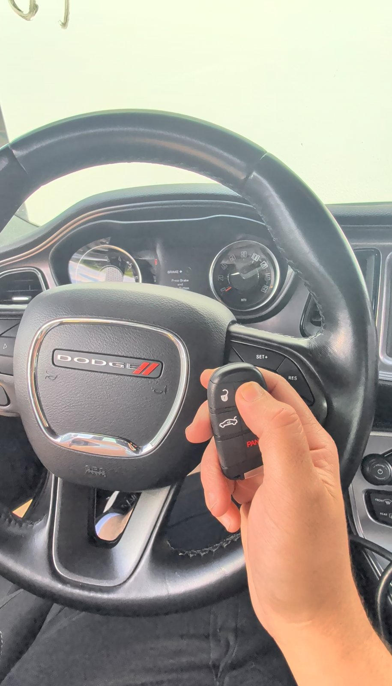
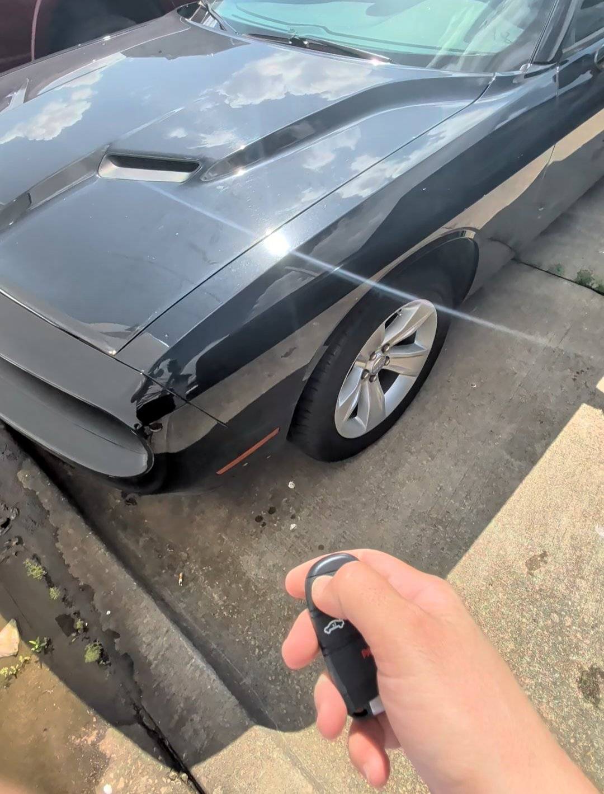
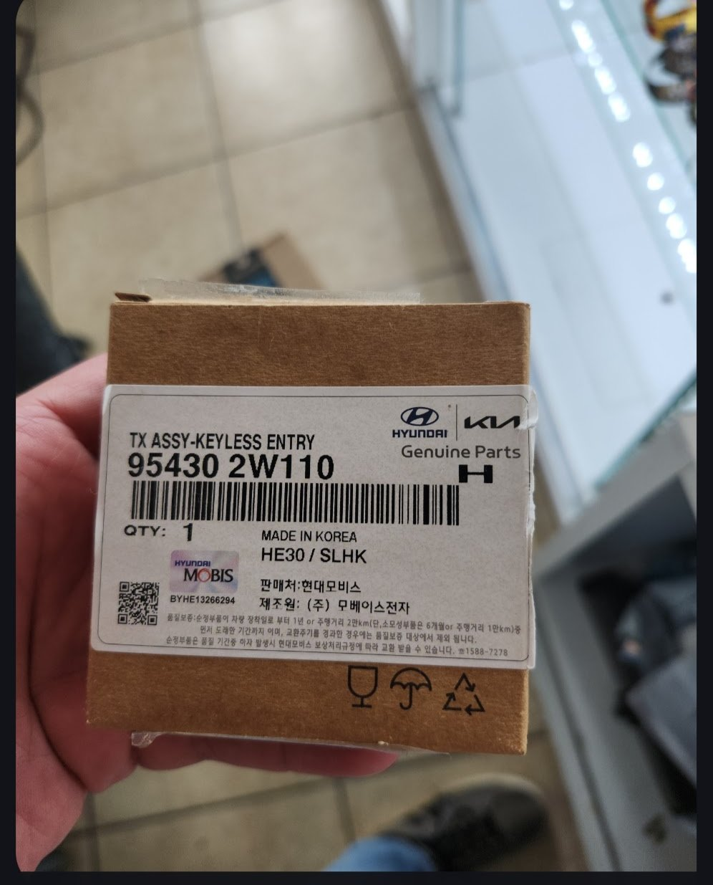

Locksmith vs. Dealership for a Car Key: Almost Always Faster, Usually Cheaper

The new key we cut and programmed for this 2023 Challenger, on the spot — after the dealership's key had been back-ordered since May.
Need a key made today? We're a local, licensed mobile locksmith and we come to you.
Call Now — (405) 870-5397Short answer: for most car key jobs, a licensed mobile locksmith beats the dealership on both speed and price. We come to you instead of you towing to them, we don't put your key on a multi-week back order, and we're usually cheaper for the same key. We handle domestic and Asian vehicles — even brand-new ones — with dealer-level tools; European cars like Mercedes and BMW are the one area we'll usually point you back to the dealer. Here's the honest comparison, and a true story that says it better than we can.
A dealership called us last week
Here's the one that still makes me smile. A local Dodge dealership called us about a 2023 Challenger. Their key had been on back order since May — the car had been sitting for two months waiting on a part, customer waiting right along with it. We showed up, cut it, programmed it, tested it, done. Same day.

That's not a knock on the dealer. It's just the reality of how car keys work now: the dealer has to order your key through the manufacturer's supply chain, and when that chain is backed up, you wait — sometimes weeks, sometimes months. A locksmith with the right tools and credentials isn't stuck in that line.
And here's one that surprises people even more: a service department at one of our local Hyundai dealerships buys OEM Hyundai keys from us. Even with our markup, we come in cheaper than their own parts department can — so when they need a key, they call us. When the dealer's own techs are buying keys from a locksmith, that tells you everything about where the value is.

Faster: almost always
This is the biggest difference, and it's not close.
- We come to you. Home, work, a parking lot, the side of the road. No tow bill, no getting the car to the dealer in the first place — which is its own problem when you have no working key.
- No back order. We source and cut keys for most makes and models on the spot. No waiting for a part to ship from the manufacturer.
- Same-day, often same-hour. For most vehicles a new key is a single visit, start to finish.
When you're standing next to a car you can't start, "faster" isn't a luxury — it's the whole job.
Usually cheaper: yes, for most keys
For the majority of vehicles, a locksmith comes in under the dealer for the same key — and you skip the extras the dealer route piles on:
- No tow. Getting a no-start car to the dealership can cost $75–$150 before they've even touched it.
- No dealer markup. Dealers price keys at dealer rates; an independent locksmith usually doesn't.
- No rental while you wait. Two months without your car (like that Challenger) isn't just annoying — it's expensive.
We quote your exact price up front, before we ever dispatch. No surprises.
When the dealership is the right call
We'll always shoot straight with you. We carry dealer-level tools for domestic and Asian vehicles — Ford, Chevy, Dodge, GMC, Toyota, Honda, Nissan, Kia, Hyundai and the rest — including brand-new models. That's the large majority of what's on the road, and we do it on-site.
Where we'll point you to the dealer is European vehicles — Mercedes-Benz, BMW, Audi, and the like. Their security systems are the most complex in the industry, they often require the manufacturer for key work, and honestly they're usually better handled at the dealer. We'd rather tell you that up front than take a job that belongs somewhere else.
So the quick rule of thumb: domestic or Asian, brand-new or old — call us first, we've almost certainly got you. European — the dealer is usually your best bet.
The bottom line
For most people, most of the time: a licensed locksmith gets you a working key faster, usually cheaper, and without the tow or the wait. The dealer isn't your only option — and as that Challenger proved, sometimes we're the ones the dealer calls.
Skip the back order. Call (405) 870-5397 and we'll come to you.
Call Now — (405) 870-5397Frequently Asked Questions
Is a locksmith cheaper than the dealership for a car key?
For most vehicles, yes. You avoid the tow, the dealer markup, and the rental-car cost while you wait. In fact, a service department at one of our local Hyundai dealerships buys OEM keys from us because — even with our markup — we come in cheaper than their own parts department. We quote your exact price up front so you can compare before you commit.
Why is my car key back-ordered at the dealership?
Dealers order keys through the manufacturer's supply chain, and those parts can be delayed for weeks or months. A locksmith with the right equipment usually isn't waiting on that same supply line — we recently made a key for a 2023 Challenger a dealer had on back order since May.
Can a locksmith really make a key for a newer car?
For domestic and Asian vehicles, yes — even brand-new models. With dealer-level tools and NASTF credentials, we cut and program keys for makes like Ford, Chevy, Dodge, Toyota, Honda, Nissan, Kia, and Hyundai on-site. European vehicles like Mercedes and BMW are the exception — their systems are more complex and usually better handled at the dealer, and we'll tell you honestly when that's the case.
Do I have to tow my car to you?
No — that's the point. We're mobile and come to you, which is a big part of why we're faster and cheaper than the dealership route.
Will a locksmith key work as well as a dealer key?
Yes. A properly cut and programmed key from a licensed locksmith functions exactly like a dealer key — same remote functions, same security — and ours is tested before we leave and backed by our 6-month warranty.